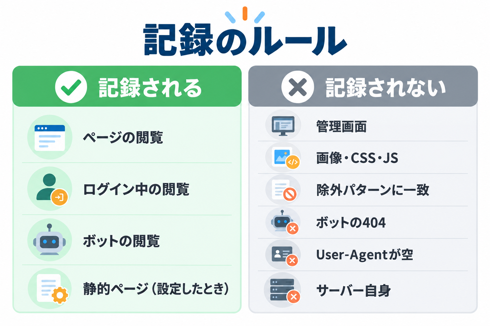
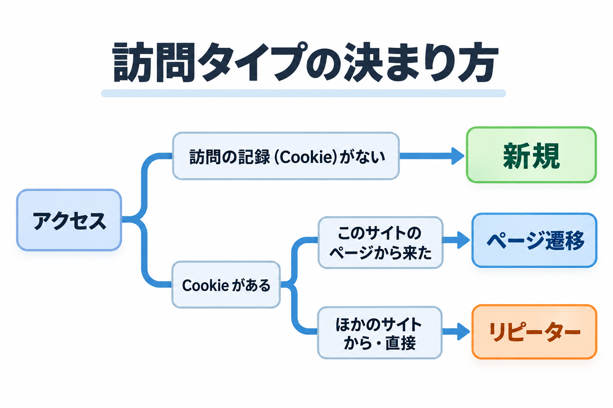

記録のルール
どのアクセスが記録され、どれが記録されないのか。訪問タイプ・国・IP アドレスがどう決まるのか。数字を正しく読むための前提をまとめます。

記録されるアクセス
- WordPress の公開ページ（記事・固定ページ・トップページ・アーカイブ・404 のページなど）の閲覧
- ログインしている人の閲覧（ユーザー ID 付きで記録します。管理者自身の閲覧も記録されます）
- ボットの閲覧（「Is Bot?」が Yes で記録します）
- 静的ページの計測を使っているページの閲覧（→ 静的ページの計測）
記録は、ページを返し終えた後にサーバー側で行います。
記録されないアクセス
| アクセス | 理由・変え方 |
|---|---|
| WordPress の管理画面 | サイトの訪問ではないため記録しません。 |
| 画像・CSS・JavaScript・フォントなどのファイル | ページの部品なので記録しません。設定の「静的ファイルを除外」とそのパターンで決まります。オフにしても、主な画像・CSS・JavaScript・フォントは記録しません。→ 静的ファイルを除外 |
| 「ログ除外URIパターン」に一致するページ | 設定で決めたパターンを含むページは記録しません。→ ログ除外URIパターン |
| サーバー自身からのアクセス | 設定の「自サーバーIPからのアクセス除外」がオン（初期値）のとき。→ アクセス除外設定 |
| ボットのアクセスで 404 になったもの | 存在しない URL を試すボットの記録で、ログが埋まらないようにしています。 |
| User-Agent が空のアクセス | 記録しません。アクセス自体を拒否することもできます。→ User-Agentが空のアクセス |
| WordPress の裏の通信（REST API・管理画面の非同期通信・定期処理） | ページの閲覧ではないため記録しません。開発者向けの設定で記録させることもできます。 |
| 先読み・プレビューのための通信、ヘッダーだけを確かめる通信 | ブラウザや検索エンジンの先読みなど、人が見たわけではない通信です。 |
| ブロックしたアクセス | ブロックの画面を返し、記録はしません。 |
訪問タイプの決まり方

| 条件 | 訪問タイプ | 意味 |
|---|---|---|
| 訪問の記録（Cookie）がない、または読めない | 新規 | 初めて来た訪問者、または Cookie の有効期限が切れた訪問者 |
| Cookie があり、このサイトのページから来た | ページ遷移 | サイトの中でページを移動した |
| Cookie があり、ほかのサイトから来た、または参照元がない | リピーター | 検索やブックマークなどから、もう一度来た |
- Cookie の有効期限は、設定の「Cookie有効期限（時間）」で決まります（初期値 24 時間）。期限を過ぎて来た人は「新規」になります。→ Cookie設定
- 「不明」は、主に CSV から取り込んだ記録で、訪問タイプの列がなかったものです。
- 参照元の「このサイト」は、www の有無を同じサイトとして扱います。
訪問者 ID と Cookie
訪問者を見分けるため、訪問者のブラウザに Cookie を 1 つ保存します。プライバシーポリシーや Cookie の同意の表示に書くときは、次の内容を参考にしてください。
| 項目 | 内容 |
|---|---|
| Cookie の名前 | kssl_visitor_tracker_KSSLID |
| 保存する内容 | ランダムに作った訪問者 ID と、初回・最後の訪問の日時 |
| 有効期限 | 設定の「Cookie有効期限（時間）」（初期値 24 時間） |
| 性質 | ページの JavaScript からは読めない設定で、HTTPS のサイトでは暗号化された通信でだけ送られます |
| 目的 | 同じ訪問者の再訪問・ページの移動を見分けるため（訪問タイプとユニーク訪問者数） |
IP アドレス
アクセス元の IP アドレスを記録します。Cloudflare を経由するサイトや、サーバーの前にプロキシ（中継サーバー）があるサイトでも、中継サーバーではなく訪問者の IP アドレスを記録します。訪問者が送ってくる情報を無条件には信用しないので、訪問者が IP アドレスを偽って記録させることはできません。
社内のネットワークや同じサーバーの中からのアクセスは、プライベートな IP アドレス（国は「LAN」）で記録されます。特殊な中継サーバーの構成で訪問者の IP アドレスが正しく記録されないときは、開発者向けの設定で中継サーバーを追加できます。
国の決まり方
ブラウザの言語設定から推定します（常に行います）。たとえば日本語（ja）のブラウザなら JP です。そのため、国の数字は「住んでいる国」ではなく「使っている言語」に近くなります。
言語から分からないとき、IP アドレスから調べます（設定の「IPアドレスから国コードを推定」がオンのときだけ）。外部の IP 位置情報サービス（ip-api.com）に訪問者の IP アドレスを送って調べ、結果を 7 日間覚えておきます。ボットには使いません。
社内のネットワークなどのプライベートな IP アドレスは「LAN」、分からないときは空（一覧では「–」）です。
IP アドレスから調べる設定をオンにすると、訪問者の IP アドレスが外部のサービスに、暗号化されない通信で送られます。プライバシーポリシーへの記載を検討してください。
ボットの判定
User-Agent（ブラウザやボットの名前）が、設定の「ボット検出パターン」に当てはまるとボットと判定します。初期値には、検索エンジン（Googlebot、bingbot など）、SEO ツール（AhrefsBot、SemrushBot など）、AI のクローラー（GPTBot、ClaudeBot、PerplexityBot など）の名前が入っています。パターンを変えると、それ以降に記録するアクセスから新しい判定になります。すでに記録したログの判定は変わりません。→ ボット検出パターン
疑わしいアクセス
設定の「疑わしいキーワード」を、ページの URL か User-Agent に含むアクセスです（攻撃の試みやスキャナーに多い文字列）。アクセス自体は拒否しません。
| 場所 | 「疑わしい」の基準 |
|---|---|
| 一覧・合計・グラフから除く（初期状態） | URL か User-Agent にキーワードを含む |
| 一覧の赤い印（⚠） | URL にキーワードを含む、または応答の番号が 400 以上（ボットの 404 は除く） |
| 削除の「疑わしいアクセスのみ削除」、エクスポートの「疑わしいアクセスのみ」 | URL にキーワードを含む |
キーワードを変えると、すでに記録したログの判定も裏で自動的にやり直します。